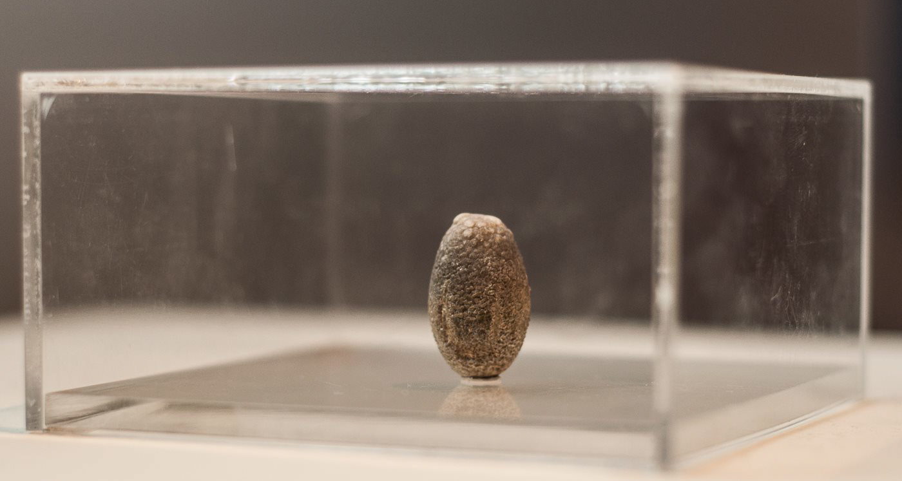
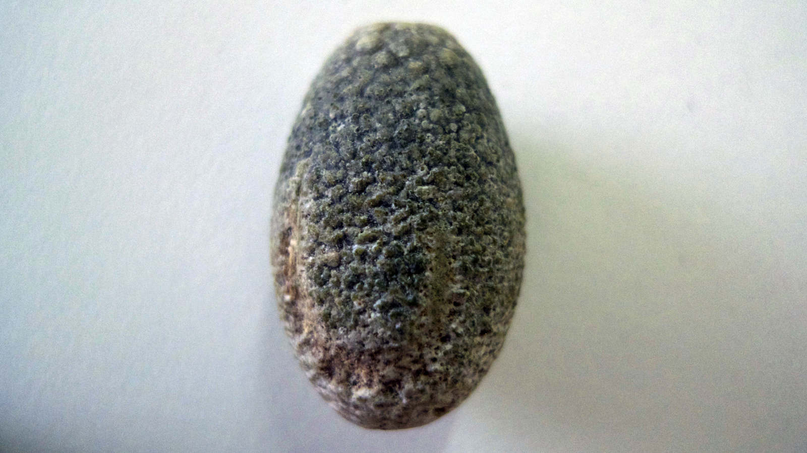

pedra (stone)


2011
escultura (sculpture), 3 cm x 2 cm
sais de cálcio, bilirrubina e colesterol cristalizados
(calcium salts, bilirubin and cholesterol crystallized)


2011
escultura (sculpture), 3 cm x 2 cm
sais de cálcio, bilirrubina e colesterol cristalizados
(calcium salts, bilirubin and cholesterol crystallized)